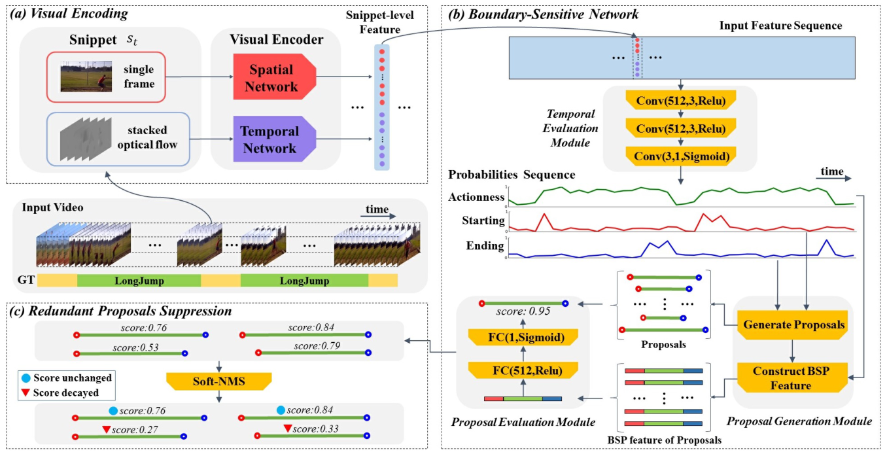
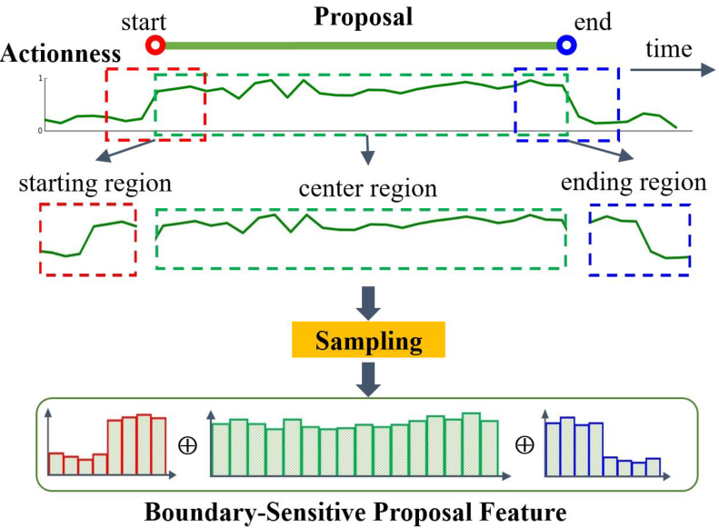
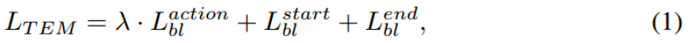
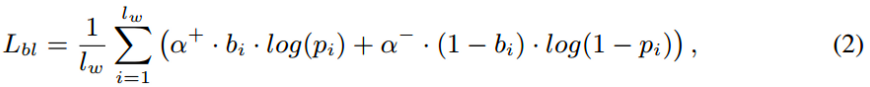
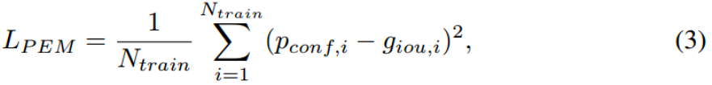
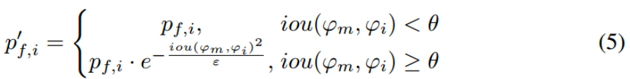

引言
这篇论文主要针对时序动作提名生成(temporal action proposal generation)任务提出了一种新的方法-边界敏感网络(Boundary Sensitive Network, BSN)。
BSN网络采用了”local to global”方法，local是指先定位可能性大的时序边界，再整合这些边界作为候选；global是指通过评估一个候选中是否包含动作的置信度来检索候选。用到的数据集是ActivityNet-1.3和THUMOS14。
高质量的候选应满足：
（1） 召回率（recall）要高（即“找得全”），同时与真实动作区域的重叠度（overlap）要大。
（2） 使用较少的候选就能实现高召回率和高重叠度。
BSN产生候选要三步：
（1）评估视频中的每个时间位置的概率，判断它是在真实动作实例的边界内部还是外部，在或不在真实动作实例的边界处，以生成起始、结束和动作概率序列作为local信息；
（2）直接合并分别具有高起始和结束概率的时间位置来生成候选。使用这种从底向上的方法，BSN可以产生持续时间灵活且边界精确的候选；
（3）使用由候选内部及其时序前后的动作得分组成的特征，BSN通过评估候选是否包含动作的置信度来检索候选。这些候选片段级的特征为更好的评估提供了全局信息。
论文贡献：
（1） 提出了“local to global”的BSN来生成高质量的时序动作候选。locally，定位高概率边界位置以获得精确的候选边界；globally，评估proposal-level的特征以获得可靠的候选置信度评分用于检索。
（2） 获得了比其他方法更好的候选质量。
（3） 与已有的动作分类器结合，显著提高了时序动作检测任务的性能。
模型方法
问题定义
在产生时序动作候选时，是不考虑动作实例的具体类别的。视频的标签是每个动作实例的开始和结束时间。视频的标签在训练时使用；预测时，应使得产生的候选以高召回率和高重叠率覆盖视频标签。
（a）视频特征编码
为了产生视频的候选，首先应该提取视频的视觉内容特征。本文采用双流网络作为视觉编码器。
双流网络：在动作识别、时序动作检测和候选生成等任务中，都有很好的效果。双流网络包括两个分支：空间网络通过单RGB帧来捕捉外观特征，时间网络通过堆叠光流域(stacked optical flow field)来捕捉运动信息。
根据视频得到多个小段（snippet），每个小段都由单帧（single frame）和以单帧为中心得到的堆叠光流域(stacked optical flow field)两部分组成。单帧送入空间网络，堆叠光流域送入时序网络，然后整合两个网络的顶端输出，作为双流特征向量，送入BSN网络作为输入。示意图如下图(a)。

（b）边界敏感网络
包括3个模块：时序评估，候选产生，候选评估。
时序评估模块 TEM
输入是基于双流网络提取的图像特征序列。采用3层时序卷积层来对视频序列中每个位置上动作开始的概率、动作结束的概率和动作进行的概率同时进行建模，从而生成 动作开始概率序列，动作结束概率序列和动作概率序列。
3层卷积层分别表示为Conv(512, 3, Relu)，Conv(512, 3, Relu)，Conv(3, 1, Sigmoid)。其中，第一项为过滤器数量，第二项为卷积核大小，第三项为激励函数，三层的步长都为1。最后一层卷积层作为分类器，产生起始，结束和动作概率。
此模块的输入是特征序列，输出是起始，结束和动作概率。
候选生成模块 PGM
此模块的目的是产生候选片段并建立相应的片段级特征。分两步来实现这个目的，（1）找到高边界概率的位置，并合并这些位置组成候选片段；（2）对于每个候选片段，建立BSP特征。
生成候选片段
满足：
（1）概率高于一个阈值；或
（2）该时间节点的概率高于前一时刻以及后一时刻的概率（即一个概率峰值）。
这样的节点将被作为候选时序边界节点。然后将候选开始时间节点和候选结束时间节点两两结合，保留时长符合要求的开始节点-结束节点组合作为候选时序动作提名。所谓的时长符合要求，就是时长应处在数据集中动作实例标签的最小时长和最大时长之间。
如下图。

建立BSP特征
对于每个提名，取其本身的时序区间作为中心区域，表示为$r_C=[t_s,t_e]$，另外其时长记为$d=t_e-t_s$ ，再取开始节点和结束节点附近的一段区间作为起始区域 $r_S=[t_s-d/5，t_s+d/5]$以及 结束区域$r_E=[t_e-d/5，t_e+d/5]$。将$r_C$内的动作序列以16点的线性插值法进行采样，对于$r_S$和$r_E$以8点的线性插值法进行采样，将这三个采样得到的向量进行连接，就得到了这个候选的BSP特征$f_{BSP}$。BSP特征包含了对应候选片段的丰富的语义信息。每个候选片段都表示为$(t_s,t_e,f_{BSP})$。
如下图。

候选评估模块 PEM
此模块的目的是用BSP特征来评估每个候选片段中包含动作实例的置信度得分。作者采用了有1个隐藏层的多层感知器模型，这个隐藏层有512个单元，以Relu激励来处理BSP特征输入。而输出层以sigmoid激励来输出置信度得分$p_{conf}$，这个得分评估的是候选片段与真实动作实例之间的重叠范围。因此生成的候选片段可以表示为$(t_s,t_e,p_{conf},p_{t_s},p_{t_e})$，其中后两项分别表示$t_s$的起始概率和$t_e$的结束概率。融合这些得分，得到预测的最终得分。
训练BSN
时序评估模块
（1）先将视频以固定的帧间隔处理为多个小段，再提取每个小段的特征得到这个视频的小段特征序列（序列中有ls个小段）；（2）采用长度为100的滑动窗口，在特征序列上滑动，没有重叠，得到的每个窗口都有两部分信息，一个是这段窗口中的特征序列，一个是这个窗口中的标签（标签就是这个窗口中的动作实例的开始ts和结束te，我们将这个范围作为动作范围，这里的开始和结束原本是某一帧，但也将其处理为一个范围，即ts变成 [ts − d/10, ts + d/10]，te变成 [te − d/10, te + d/10]），即起始帧变为起始范围，结束帧变为结束范围）；（3）将一个窗口的特征序列作为输入，时序评估模块产生了起始概率序列，结束概率序列和动作概率序列，长度都等于滑动窗口的长度；（4）对于一个窗口中的每个位置tn，将它的范围定义为 [tn − ds/2, tn + ds/2]，ds=tn-t(n-1)，即两个小段间的时序间隔，并从这个窗口的三个概率序列中分别得到这个位置的对应概率得分；（5）此时，对于窗口中某个位置tn的范围，我们可以分别计算它跟标签的动作范围，起始范围和结束范围的IoP；（6）因此我们可以用6个信息来表示tn的信息——tn的动作概率，tn的起始概率，tn的结束概率，tn的范围与动作范围的最大匹配重叠率IoP，tn的范围与起始范围的最大匹配重叠率IoP，tn的范围与结束范围的最大匹配重叠率IoP。
这个模块的loss由动作loss，起始loss和结束loss三部分组成。即

动作loss，起始loss和结束loss的计算公式是相同的，即

候选评估模块
用时序评估模块产生的概率序列，候选生成模块可以产生候选片段（ts，te，fBSP）。（1）候选评估模块将候选的BSP特征作为输入，可以得到这个候选的置信度得分；（2）再计算这个片段跟所有标签的IoU，并记录最大的重叠得分giou；（3）将候选片段集分为两个部分，一个是giou大于0.7的正样本集，一个是giou小于0.3的负样本集；（4）为了数据平衡，作者采用了正样本集中的所有样本，再从负样本集中随机挑选样本，使得两个片段集的比例大概为1:2。
这个模块的目标函数是简单的回归loss，即

预测和后处理
候选评估模块用$(t_s,t_e,p_{conf},p_{t_s},p_{t_e})$五种信息来表示候选片段，还需要融合这些得分来得到预测的最终得分。
Score fusion for retrieving：Pf = Pconf Pts Pte，这个Pf被用于候选检索
Redundant proposals suppression：在一个动作实例周围可能会得到多个不同时序重叠率的候选片段，因此需要压制冗余的候选片段，以减少候选片段，获得更高的召回率。
Soft-NMS是一种使用得分衰减函数来压制冗余结果的非极大值抑制算法。（1）先将所有候选片段按得分排序；（2）计算得分最高的候选片段与其他候选片段的IoU，使得重叠高的候选片段减少；（3）对剩余的候选片段递归地执行第二步，来产生重新计算的候选片段集。Soft-NMS的高斯衰减函数可以表示为：

实验
数据集和设置
数据集：ActivityNet-1.3包含19994个视频，200个动作类别，以2:1:1的比例划分训练、验证、测试集。THUMOS14验证集和测试集中有时序标注的视频分别有200和213个，有20个动作类别。
评价指标：时序候选生成任务中，常用以多个IoU阈值计算得到的平均召回率（AR）作为评价指标。本文中，在ActivityNet-1.3上使用的IoU阈值集为[0.5 : 0.05 : 0.95]，THUMOS14上是[0.5 : 0.05 : 1.0]。为了评估召回率和候选数量的关系，作者在两个数据集上都评估了平均候选数量（AN）下的AR，即AR@AN。在ActivityNet-1.3上，AR和AN曲线下的面积之比（AUC）也被作为评价指标之一，AN的变化范围是0到100。常用评价指标还有mAP。在ActivityNet-1.3上，还使用了IoU阈值{0.5, 0.75, 0.95}下的mAP和IoU阈值集[0.5 : 0.05 : 0.95]下的平均mAP；在THUMOS14上，使用了IoU阈值为{0.3, 0.4, 0.5, 0.6, 0.7}时的mAP。
总结：
（1）平均召回率（AR）
（2）AR@AN：评估召回率和候选片段数量的关系，即评估模型以高召回率来产生和检索候选的能力
（3）AUC：AR@AN曲线下的面积，评估模型以高召回率来产生和检索候选的能力
（4）mAP
（5）recall of multiple IoU thresholds：评估模型以高时序重叠来产生和检索候选的能力
实现细节：对于视觉特征编码，作者使用的是双流网络，其中BN-Inception网络作为时序网络，ResNet网络作为空间网络。这个双流网络是用Caffe实现的，是在ActivityNet-1.3的训练集上预训练的。在特征提取阶段，ActivityNet-1.3上小段之间的间隔σ为16，THUMOS14上为5。
在ActivityNet-1.3上，因为视频长度的限制，作者将每个视频的特征序列长度用线性插值的方法变为了100，也将对应的标签的duration变为了范围0到1。BSN中，时序评估模块和候选评估模块都是用TensorFlow实现的。在两个数据集上，训练时序评估模块时，前10个epoch中batch size为16，学习率为0.001,接下来10个epoch上，学习率为0.0001；训练候选评估模块时，batch size为256，学习率与前面一样。对于Soft-NMS，在ActivityNet-1.3上阈值θ被设为0.8，THUMOS14上为0.65，而高斯函数ε在两个数据集上都设为0.75。
时序候选生成
实验一：实验主要分两方面：（1）评估模型以高召回率产生和检索候选的能力（AR@AN，AUC），结论是BSN始终优于其他方法，但当AN小的时候，优势更明显；（2）评估模型以高时序重叠来产生和检索候选的能力（recall of multiple IoU threshold），作者测试了AN为100和1000两种情况，结论是，当候选数量小的时候，无论tIoU高还是低，BSN始终最优，当候选数量大的时候，BSN在tIoU大于0.8时最优。
实验二：将双流网络提取视频特征的部分替换为了C3D，将Soft-NMS换成Greedy-NMS试了，证明是BSN本身的结构带来的性能提升。
实验三：验证BSN在没见过的动作类别上的性能：在ActivityNet-1.3中选择了两个不同语义的动作子集，“Sports, Exercise, and Recreation”作为看过的数据集，包括了87个动作类别，4455个训练视频和2198个验证视频，“Socializing, Relaxing, and Leisure”作为没看过的数据集，包括了38个动作类别，1903个训练视频和896个验证视频。为了确保实验的有效性，没有使用在ActivityNet-1.3预训练的双流网络提取视频特征，而是使用了在Sports-1M上预训练的C3D网络，实验证明在没见过的类别上，性能只有微小的下降，因此证明了BSN的一般性。
实验四：验证BSN中TEM模块和PEM模块的有效性。没有PEM的话，BSN效果依然比其他方法好，但有PEM可以带来进一步的提高。
实验五：比较了BSP特征只要Boundary region、只要Center region和两者都要的情况，结论是，虽然center region的贡献比boundary region大，但还是两者都要的情况下效果最好。